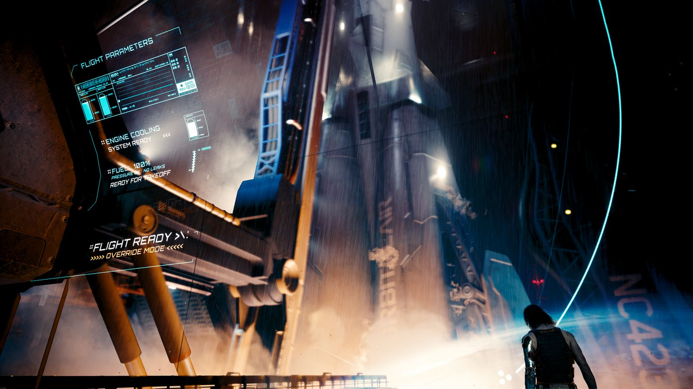
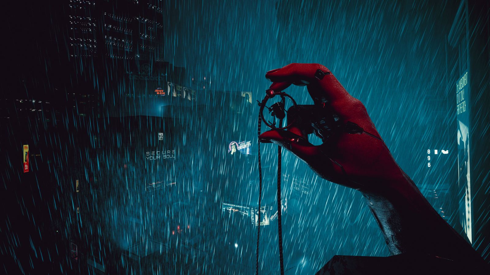

在 2077 年，城市比国家更真实
夜之城不是凭空造出来的未来。它有一条清晰的血统：1988 年桌上角色扮演游戏《赛博朋克 2020》里的一座加州城市，被 CD PROJEKT RED 往后推了五十七年，然后放大到可以走进去的程度。
01血统：从桌面到屏幕
赛博朋克这个词在 1980 年代被用来命名一批小说：布鲁斯·斯特林的选集、威廉·吉布森的《神经漫游者》。它们共同给出一个判断——未来不会更公平，技术会先被有钱人买走。
1988 年，迈克·庞德史密斯把这套想象做成了桌上角色扮演游戏《赛博朋克 2020》。玩家扮演的不是拯救世界的英雄，而是被称为「边缘行者」的职业佣兵：接活、拿钱、改造身体、活到下一次接活。
CD PROJEKT RED 在 2012 年公开立项，并拿到庞德史密斯本人的授权。关键的一点是，游戏没有另起一套世界观，而是接着《2020》的年表往后写到 2077 年。这也解释了为什么夜之城看起来不像“设计师想象中的未来”，而像一座真的老过、烂过、被反复改建过的城市。
一条被继承的时间线
- 1988《Cyberpunk 2020》出版，世界观定型
- 2012CDPR 公布改编计划
- 2023设定中的第四次企业战争，荒坂塔被核爆
- 2077游戏开始，距那次爆炸约半个世纪
庞德史密斯在设定里留下了一个空档：2020 到 2077 之间的五十多年，正好由游戏来填。这让 CDPR 可以自由创造新的建筑风格与时尚，同时不脱离原有的骨架。

02一座被卖光的城市
夜之城位于北加州自由邦的海岸线上。这里的“自由”有特定含义：联邦政府无力征税，州政府形同虚设，真正的行政权由几家巨型企业掌握。警察由私人安保承包，市政预算由公司赞助，连市长选举都是企业之间的代理人战争。
城市由企业家理查德·奈特规划建成，并以他的名字命名。设计初衷是把它做成一座高科技的自由港，结果它成了这个世界上最贵、也最不平等的地方之一：市中心的天际线由企业总部构成，往西是办公楼与公寓，往东是工地、贫民窟和填不满的烂尾楼。
这座城市的阶层是垂直分布的。摩天楼顶层的会议室与楼下的街道只隔几十层，但两者的法律、医疗、空气质量都不是同一套。你可以在同一栋楼里看到企业高管和给他擦鞋的人，中间只隔一道需要门禁的电梯。
别处找不到的三个设定
人体即硬件
义体可以买卖、可以抵押、可以被回收。你的手臂是资产，也是负债。
意识可以被复制
「灵魂杀手」能把人的意识数字化。于是“死亡”变成一个有争议的技术问题。
信息即货币
网络战由雇佣兵执行，能穿透「黑墙」的人比核弹更值钱。

03六个分区，六种活法
城市被分成六个行政区和外围的恶土。每个区的建筑风格、帮派势力、你能接到的委托类型都不一样——这不是布景差异，是阶层差异。
| 分区 | 气质 | 你会在这里遇到什么 |
|---|---|---|
| 沃森 Watson |
你出生的地方。霓虹灯、夜市、旧楼与移民 | 歌舞伎区、小中国、荒坂滨水区。漩涡帮的地盘，也是主线第一章的主要舞台。街头小子出身在这里长大。 |
| 市中心 City Center |
整洁、昂贵、几乎没有行人 | 公司广场、荒坂塔、NCPD 总部。白天由企业安保巡逻，夜里由无人机打扫。整座城市权力最集中的一小块地。 |
| 威斯布鲁克 Westbrook |
消费主义的橱窗 | 日本街、查特山、北橡区。高端医疗、超梦工作室、虎爪帮的赌场与风俗业都在这一片。 |
| 海伍德 Heywood |
社区感最强，也最排外 | 维斯塔德雷、格伦。瓦伦蒂诺帮的家族网络，教堂、修车铺、老式餐馆。这里的人讲“自己人”。 |
| 圣多明戈 Santo Domingo |
烟囱、变电站、集体宿舍 | 阿罗约、兰乔科罗纳多。发电厂与工厂区，六街帮控制。城市运转所需的一切脏活都在这里。 |
| 太平洲 Pacifica |
烂尾的度假天堂 | 海岸景观区与狗镇。投资撤走后留下空楼与巫毒帮；狗镇被汉森上校的幽冥犬割据，资料片《往日之影》的舞台。 |
| 恶土 Badlands |
城市之外，另一种秩序 | 荒漠、风车、废弃加油站。游民部族（如阿德卡多）在这条公路上跑运输，也是“星辰”结局的去处。 |
04谁在真正统治这里
巨型企业
荒坂做安保与军工，军用科技做武器与私人武装，康陶做廉价制造，生物技术做食品与医药。它们不竞选，但决定谁当选。
暴力机关
NCPD 是名义上的警察，经费靠企业捐助；MaxTac 是专门处理赛博精神病的特警；企业各自的安保部队才是真正的执法者。
帮派与中间人
漩涡帮、动物帮、六街帮、瓦伦蒂诺、虎爪帮、巫毒帮各占一片。中间人负责把活派给佣兵，不问理由，只抽成。
05现实世界这边的四十年
《Cyberpunk 2020》出版
迈克·庞德史密斯用一本桌游把“高科技、低生活”变成可以掷骰子的规则书。
CDPR 公布改编计划
当时团队还在做《巫师 3》。2013 年放出首支预告片，此后沉寂五年。
E3 闭门演示，拿下超过 100 个展会奖项
同年基努·里维斯确认出演“强尼·银手”，成为整场宣发最大的爆点。
发售，三度跳票之后
PC 版口碑良好，PS4 / Xbox One 版因性能问题被索尼下架，成为游戏史上罕见的先例。
《边缘行者》上线，把口碑拉了回来
动画播出后游戏在 PC 上的同时在线人数回到首发水平，2022 年销量同比上升。
2.0 更新 + 资料片《往日之影》
警察系统、专长树、义体、载具战斗全部重做；狗镇开放，游戏首次出现真正意义上的“活下去”结局。
销量破 4000 万，《边缘行者 2》上线
6 月登陆 Switch 2，7 月官方宣布累计销量破 4000 万套，10 月动画第二季在 Netflix 播出。
06进门要会的词
- 义体 CYBERWARE植入体内的机械或电子部件。可以买、可以升级、可以拆下来再卖。
- 赛博精神病义体过量导致的精神崩溃。医学问题，也是社会问题——很多人是被这座城逼疯的。
- 超梦 BRAINDANCE可录制、可回放、可编辑的感官体验。能看别人的记忆，也能伪造一段。
- 快速破解 QUICKHACK远程入侵对方的义体或设备，让人失明、短路、自燃。
- 灵魂杀手 SOULKILLER荒坂开发的意识数字化程序，原本用于审讯，后来成了“永生”的技术底座。
- 黑墙 BLACKWALL网络世界里的隔离墙，墙外是失控的 AI。穿墙的能力既是武器，也是灾祸。
- 御子 MIKOSHI荒坂存放数字化意识的服务器设施。被关进去的人，理论上还“活着”。
- 街头声望 STREET CRED佣兵圈里的信用分。声望越高，能接的活越脏，也越贵。